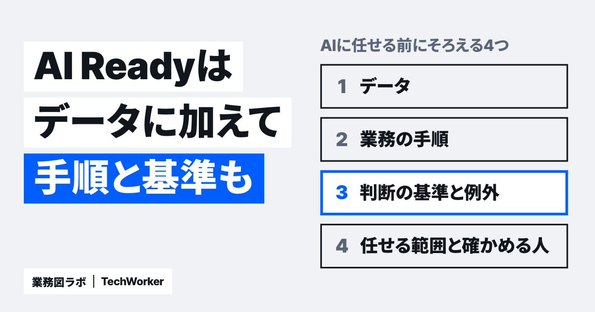
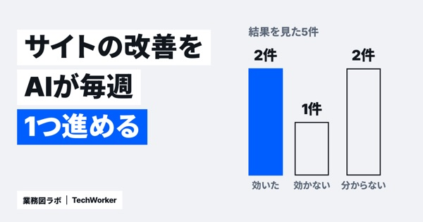
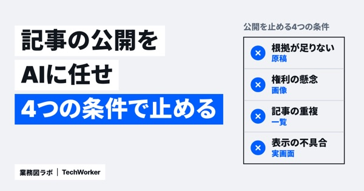
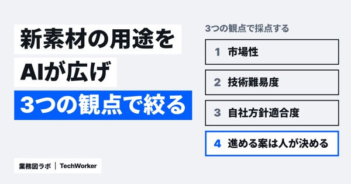
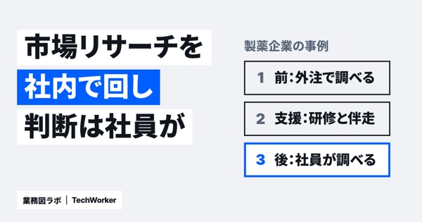
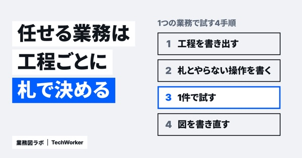

記事一覧
すべて：11件

いちばん読まれている記事情シス・AI導入担当AI Readyとは｜経産省の定義と、AIに仕事を任せられる会社の条件AI Ready（AI-Ready）とは、AIを効果的かつ安全に使えるよう、会社のデータを整えた状態です。経産省・経団連・Gartnerの一次資料で定義と段階を確かめ、データに加えて業務の手順・判断基準・例外を書き出す進め方を示します。記事を読む 業務責任者見積のAI活用｜下書き・確認・送信を分ける業務図電材・電線卸の見積の下書きをAIに任せるときの業務図を、デンミツAIの公開画面から設計例で示します。下書き・確認・承認・送信の分け方、品番・数量・単価を人へ戻す条件、最初の試行で残す記録が分かります。
業務責任者サイトの改善をAIが毎週1つ進める｜数字を読み、直して台帳に残す業務図TechWorkerでは毎週月曜、スクリプトが自社サイトの数字を集め、AIが改善を1つ選んで直しています。数字を集める所と直す所の分け方と、台帳への残し方を紹介します。
業務責任者記事の公開をAIに任せる｜題材選びから表示の確認まで、審査で止める業務図AIに記事の公開を任せる際は、原稿の合格から実サイトの表示確認までを担当の仕事に含めます。TechWorkerの10月27日の実行記録から、引継ぎ項目と止める条件を紹介します。
業務責任者新素材の用途探しにAIを使う｜案を広げ、3つの観点で絞る業務図化学メーカーで、新素材の用途探しを生成AIの手法にした事例です。AIが用途の案を広げ、市場性・技術難易度・自社方針適合度で採点し、1時間で絞り込むまでの流れを紹介します。
業務責任者市場リサーチを社内で回す｜Deep Researchで調べ、判断は社員が持つ業務図製薬企業のマーケティング部門で、外部コンサルに任せていた疾患・薬剤の市場リサーチを、社員が自分で回せるようにした事例です。Deep Researchで調べる手順と、社員が持つ判断を紹介します。 経営者・経営幹部AIの全社展開を部門ごとに計画する｜特性の整理から横展開までの業務図建設企業で、経営層が掲げるAI活用を、部門ごとの導入計画に落としている事例です。業務の特性を整理し、ロードマップを作り、先に進めた部門のやり方を広げる流れを紹介します。 情シス・AI導入担当会社の記憶をAIが毎晩整理する｜記録から事実を抜き、翌朝のAIに渡す業務図TechWorkerでは、社内の決定・会話・案件の記録を、AIが毎晩2時に整理しています。事実を抜き出し、つながりを直して翌朝のAIに渡す流れと、人が直す所を紹介します。 情シス・AI導入担当AIの作業者に仕事を任せる｜指示書と合格の条件で点検する業務図TechWorkerでは、責任者のAIが仕事を指示書にし、空いている作業者のAIに出しています。合格の条件で点検してから代表に束ねて報告する流れと、作業者がしないことを紹介します。 業務責任者月次締めのAI活用｜仕訳案・照合・資料作成を分ける業務図月次締めのAI活用は、仕訳案・照合・月次資料の下書きをAIに、登録・差異の調査・締めの判断を人に分けます。TechWorkerが公開した経理の業務図をもとに、試用で書き換えさせない範囲、差異候補の引き継ぎ方、完成資料と比べる試し方をまとめます。
業務責任者AIに任せる業務の決め方｜商談業務図で読む、下書きと実行の境界AIに任せる業務の決め方を、TechWorkerの公開済みの商談業務図で解説します。工程ごとに、AIが自動で行う・AIが下書きして人が確認する・人が行うの3つに分け、AIがやらない操作、確認者、止める条件を書いて1つの業務で試す手順をまとめます。このメディアには、選んだ読者向けの記事がまだありません。
ほかのメディアを見る
このメディアについて
「業務図ラボ」は、業務図を起点にAIエージェントを作るギョウムズAIを提供する株式会社TechWorkerが運営するメディアです。
業務図は、TechWorker の社内で回している業務、支援の事例（会社名は伏せています）、記事で提案する設計例のどれかで、どれなのかを図の下に書いています。